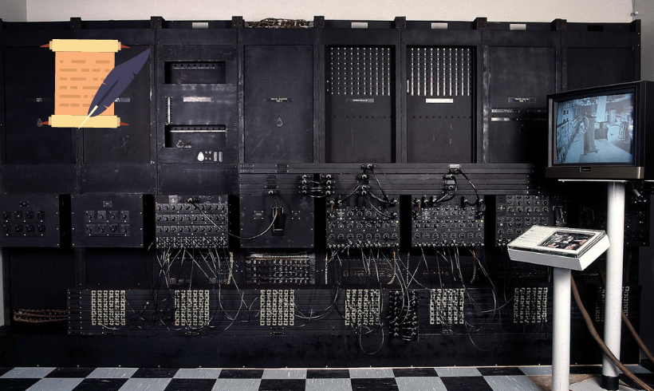
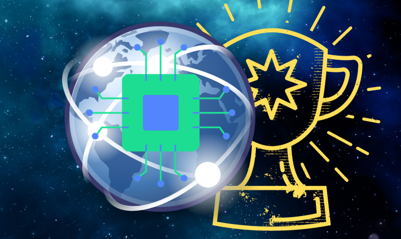

Introdução
.png)
O avanço do poder de processamento dos computadores ao longo das décadas é uma narrativa fascinante, entrelaçada com a evolução da tecnologia da computação. Este artigo explora marcos cruciais desde os primórdios da computação eletrônica até as inovações mais recentes, destacando como os processadores moldaram a era digital.
História dos Processadores
Por Lucas Glaydson, 10 de novembro de 2023
A história dos processadores de computador é fascinante e está intrinsecamente ligada ao desenvolvimento da tecnologia da computação. Aqui estão alguns marcos importantes na evolução dos processadores:
Na década de 1940, o ENIAC foi o primeiro computador eletrônico, embora não possuísse um processador único. Os anos 1950 trouxeram avanços cruciais com a invenção do transistor e o desenvolvimento de circuitos integrados, permitindo a miniaturização dos componentes eletrônicos.
Na década de 1960, a Intel lançou o primeiro circuito integrado comercial, abrindo caminho para a integração de mais componentes em um único chip. Os anos 1970 marcaram o surgimento dos microprocessadores, com a Intel lançando o pioneiro Intel 4004 em 1971, inaugurando a era dos computadores pessoais. A Intel continuou a inovar com os processadores 8008, 8080 e 8086, este último servindo como base para a arquitetura x86 ainda amplamente utilizada.
A década de 1980 testemunhou a revolução dos computadores pessoais, com a IBM lançando o primeiro PC em 1981, equipado com o processador Intel 8088. A AMD também ingressou no mercado de processadores. Na década de 1990, a Intel lançou os avançados processadores 486 e Pentium, enquanto a AMD oferecia concorrência significativa com os processadores K5, K6 e Athlon.
Os anos 2000 viram a introdução de tecnologia de múltiplos núcleos, com a Intel lançando os Pentium 4 e Core 2 Duo. A AMD contribuiu com a linha Athlon 64, marcando a transição para a arquitetura de 64 bits. Na década de 2010, a Intel focou em eficiência energética e desempenho por watt com a família Core i, enquanto a AMD lançou a arquitetura Zen e os processadores Ryzen, aumentando a concorrência.
Na década de 2020, a AMD continuou desafiando a Intel com os processadores Ryzen de última geração. A Intel, por sua vez, lançou os processadores Core de 11ª geração, buscando melhorar o desempenho e a eficiência, destacando a evolução constante e a competição no campo dos processadores de computador.
Marcos Importantes nos processadores
Por Jônatas Trindade, 10 de novembro de 2023
No mundo dos processadores, houve marcos que impulsionaram a evolução, e é graças a essa evolução que temos tecnologias com um alto poder de processamento de dados. Os processadores conhecidos como high tech, ou seja, processadores que tem uma alta tecnologia em processamento de dados, nos permite processar bilhões de dados por segundo, assim podemos lidar com sistemas de IA ou gráficos ultrarrealista.
A lei de Moore, foi um marco muito importante no mundo dos processadores, e essa lei foi proposta por Gordon Moore, o cofundador da famosa empresa Intel, em 1965, essa lei afirma que o número de transistores em um chip iria dobrar a cada dois anos, tendo como resultado um aumento exponencial na capacidade de processamento, dessa maneira iremos ter processadores gigantesco, se não fosse a miniaturização.
A miniaturização, foi um marco muito importante nos processadores, foi a chave para o avanço imenso que temos hoje. Ela traz a importância da redução do tamanho dos transistores, permitindo que mais deles sejam integrados em um mesmo chip. A miniaturização está envolvida diretamente com a lei de Moore.
As arquiteturas notáveis, foi mais um ponto importante na evolução dos processadores, assim definimos como os processadores irão se comportar, e existem vários padrões, onde cada tem o seu estilo, alguns padrões são:
Arquitetura Harvard criada em 1943, foi a primeira arquitetura de processadores, ela trouxe como marco a separação da memória de instrução e a memória de dados. Isso permitiu que os processadores acessassem as instruções e os dados de maneira simultânea, aumentando o desempenho.
A arquitetura Von Neumann criada em 1945, foi a arquitetura de processador mais comumente usada. É semelhante à arquitetura de Harvard, tendo o seu diferencial, com o compartilhamento da memória de instruções e dados, assim tendo um design mais robusto com um desempenho reduzido.
Arquitetura CISC criada em 1971, a palavra CISC significa Complex Instruction Set Computer. As arquiteturas CISC usam um conjunto de instruções extenso que pode realizar uma variedade de tarefas. Isso pode tornar o código CISC mais fácil de escrever, mas pode reduzir o desempenho.
Arquitetura RISC criada em 1985, RISC significa "Reduced Instruction Set Computer". As arquiteturas RISC usam um conjunto de instruções menor e mais simples que as arquiteturas CISC. Isso pode aumentar o desempenho, mas pode tornar o código RISC mais difícil de escrever.
Arquitetura superescalar criada em 1988, sendo a primeira arquitetura que permite a execução de várias instruções ao mesmo tempo. Assim aumentando o desempenho significativamente.
Arquitetura de múltiplos núcleos criados em 1996, sendo o modelo mais novo. Os processadores de múltiplos núcleos possuem dois ou mais núcleos de processamento. Assim temos um aumento no desempenho ao permitir que várias tarefas sejam executadas simultaneamente.
Conclusivamente, todos esses marcos nos trouxeram até o ponto em que estamos, e continuaram a nos permitir evoluir, claro que vão existir novos marcos no futuro com a possível capacidade de processamento quântico, mas é bom saber como chegamos aqui, e para onde vamos.
Processadores que foram importantes
Por Thomas Trindade, 10 de novembro de 2023

Na história da computação encontraremos diversos processadores que foram importante para chegarmos no nível de tecnologia que estamos hoje em dia, esses são alguns deles:
Intel 8080 (1974) - Foi um dos primeiro Microprocessadores que são 8bits.
Intel 8086 (1978) - O intel 8086 teve como título o primeiro processador da arquitetura x86, que é utilizada até os dias de hoje.
Intel 80386 (1985) - O intel 80386 foi responsável por trazer a capacidade de suportar a multitarefa e a memória protegida, nos permitindo usar sistemas operacionais avançados, como Windows e Linux.
IBM POWER (1990) - Amplamente conhecido por ser usado em servidores de alto desempenho.
Intel Pentium (1993) - Com o Intel Pentium, houve um grande salto na capacidade do processamento e consequentemente, no desempenho dos computadores.
AMD Athlon (1999) - Primeiro processador x86 da sétima geração.
ARM - A marca sempre foi conhecida por fabricar conjunto de arquiteturas para processadores com baixo consumo de bateria, focada em versatilidade, os processadores ARM costumam atender desde dispositivos móveis até grandes servidores.
Intel Core (2006) - Seguindo o ramo de baixo consumo de bateria, a intel lançou o Intel Core que trouxe avanços no desempenho e também na eficiência da bateria.
IBM zSeries - Usado em Mainframe, a IBM Z é uma família de processadores que é focada em grandes negócios e empresas, ele foi feito para suportar diversas cargas de trabalho e ainda garantir um ótimo desempenho e segurança.
Curiosidade - O maior Mainframe do mundo é o IBM z13
Raspberry Pi - Utilizando a arquitetura ARM Cortex-A, o Raspberry Pi, vem sendo um grande pivô do ensino da tecnologia nas escolas.
Impactos passados, presentes e futuros da evolução dos processadores
Por Maria Deisiane, Alefe Glaudson, 10 de novembro de 2023
O Impacto no Futuro do Processamento de Dados
A Revolução Digital, impulsionada por avanços tecnológicos, está desencadeando uma transformação abrangente em escala global. A automação industrial emerge como uma força vital, otimizando processos e reduzindo custos, representando uma mudança paradigmática na produção. Na área da saúde, avanços tecnológicos não apenas proporcionam diagnósticos mais precisos, mas também oferecem tratamentos personalizados e uma gestão eficiente dos dados de saúde. Simultaneamente, a indústria do entretenimento está passando por mudanças radicais com a digitalização, plataformas de streaming, realidade virtual e experiências interativas, redefinindo fundamentalmente a forma como consumimos conteúdo.
Os impactos presentes dessa revolução são claramente perceptíveis na economia, emprego e nas dinâmicas sociais, gerando tanto desafios quanto oportunidades significativas. As tecnologias de comunicação, notavelmente o 5G e a Internet das Coisas (IoT), estão conectando o mundo de maneiras sem precedentes, acelerando a troca de informações e impulsionando a inovação em diversas esferas. Paralelamente, a crescente quantidade de dados disponíveis é explorada através de tecnologias de Big Data e análise de dados, proporcionando insights valiosos para empresas e organizações em um ambiente cada vez mais interconectado.
Nesse contexto de mudanças rápidas e interdependência tecnológica, a eficaz gestão do Big Data torna-se crucial. Adaptar-se a esse cenário dinâmico e complexo é imperativo para o sucesso contínuo, destacando a importância da inovação e da compreensão aprofundada das tecnologias emergentes. Esses elementos convergem para moldar um futuro digital dinâmico e desafiador, onde a habilidade de compreender e capitalizar as oportunidades geradas pelas tecnologias emergentes se torna essencial para o progresso e a prosperidade.
Impacto da Computação Quântica

A computação quântica pode revolucionar o processamento de dados:
Velocidade: A computação quântica pode resolver problemas complexos muito mais rapidamente do que os computadores clássicos. Isso significa que tarefas que levariam anos para serem concluídas em um computador clássico podem ser realizadas em segundos em um computador quântico.
Machine Learning e IA: A computação quântica, com seu poder de processamento superior, pode acelerar o desenvolvimento de algoritmos de aprendizado de máquina e inteligência artificial. Isso pode levar a avanços significativos em áreas como reconhecimento de padrões e tomada de decisões inteligentes.
Criptografia: A computação quântica tem o potencial de quebrar criptografias complexas que atualmente protegem informações sigilosas. Isso está impulsionando a pesquisa em novos métodos de criptografia quântica.
Pesquisa Científica: Os computadores quânticos são usados para pesquisas científicas em campos como biologia, meteorologia, astronomia e ciência molecular. Eles podem ajudar os pesquisadores a simular e analisar sistemas complexos de uma maneira que não seria possível com a computação clássica.
Custo e Viabilidade: Atualmente, os computadores quânticos são caros para fabricar e operar, e só funcionam em ambientes com temperaturas próximas ao zero absoluto (-273,15°C). Além disso, o núcleo precisa ser protegido contracampos magnéticos e ondas eletromagnéticas. No entanto, diversos avanços já foram feitos na área, como a criação de qubits mais estáveis e aprimoramentos em algoritmos quânticos.
Embora ainda em desenvolvimento, a computação quântica promete transformar muitos aspectos do processamento de dados.
Impacto do Processamento de Máquina na Saúde

O processamento de máquina pode transformar a saúde e medicina personalizada:
Diagnósticos: O processamento de máquina pode analisar grandes volumes de dados médicos e históricos de pacientes para identificar padrões e sinais que podem indicar doenças. Isso melhora a precisão e a velocidade dos diagnósticos.
Tratamentos personalizados: O processamento de máquina pode analisar dados genéticos, histórico médico e outros fatores para recomendar terapias mais adequadas e eficientes para cada paciente. Isso fornece insights valiosos para a personalização dos tratamentos.
Processos médicos: O processamento de máquina pode automatizar e agilizar uma série de tarefas administrativas e operacionais nos hospitais e clínicas. Isso permite que os profissionais de saúde foquem mais tempo e energia no atendimento direto aos pacientes, melhorando a eficiência dos processos médicos.
Pesquisa médica: O processamento de máquina tem contribuído para avanços significativos na pesquisa médica, acelerando a descoberta de novos medicamentos e tratamentos. Ele pode analisar grandes bancos de dados, identificar padrões e realizar simulações complexas, acelerando o processo de desenvolvimento de novas terapias. Isso contribui para a cura de doenças até então incuráveis.